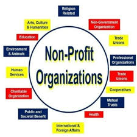

Making a Difference in Our Community
Why it is important for society
Non-profit organizations (NPOs) play a crucial role in addressing social issues and contributing to the well-being of communities.NPOs often step in to provide services and support where government and private sectors may fall short. They address critical issues such as hunger, homelessness, education, and healthcare.They focus on specific causes and populations, ensuring that even the most marginalized groups receive attention and aid.Many NPOs work to raise awareness and advocate for policy changes on issues like human rights, environmental protection, and social justice.They empower individuals and communities to take action and create positive change in their own lives and surroundings.

We are dedicated to improving lives through various initiatives and projects. Explore our site to learn more about our mission, upcoming events, and how you can get involved.